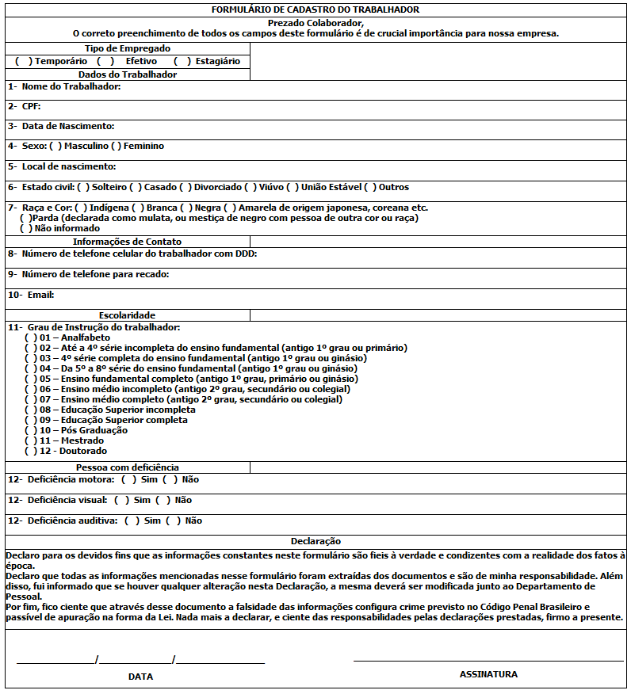

Este relatório foi criado utilizando o gerador de relatórios do sistema Domínio, onde trabalho atualmente. Através de consultas SQL otimizadas, foi possível extrair e consolidar dados relevantes para análise de desempenho e controle interno.
O projeto destaca a habilidade de manipulação de banco de dados e elaboração de relatórios personalizados que auxiliam na tomada de decisão. A estrutura SQL foi desenvolvida visando eficiência e clareza nos resultados apresentados.
← Voltar ao portfólio